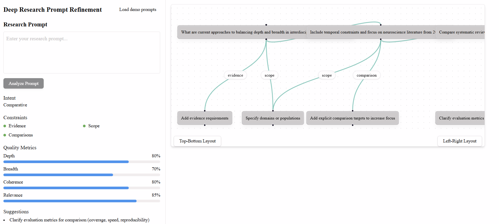

Interactive Visualization for Deep Research Prompt Refinement
CSCI 5541: Natural Language Processing — Fall 2025
University of Minnesota
Team Adamnn

Mauricio Villavicencio

Christopher Hardwick
Anurag Purohit
Abstract
Researchers increasingly use ChatGPT’s Deep Research to explore literature and form hypotheses, yet many struggle to craft prompts that balance breadth and depth. Broad prompts yield shallow overviews, while narrow ones miss relevant perspectives. We propose an interactive visualization that scaffolds prompt refinement for Deep Research. The tool classifies user intent, flags missing constraints (e.g., evidence, scope, comparisons), and provides diagnostic signals about prompt scope and specificity while tracking how edits shift predicted response quality. A small open-source model powers critique and dual prompt rewrites; users then send only the finalized prompt to Deep Research. We evaluated the system in a within-subjects user study (N = 11), measuring perceived quality gains, prompt refinement efficiency, and user understanding of prompt effects.
Visualization Figures
Final visualization prototype for Deep Research prompt refinement.

Earlier prototype shown below for comparison.
1. Introduction
Deep Research modes in modern LLMs support multi-step, evidence-based investigation, but their outputs are highly sensitive to prompt quality. Users frequently struggle to specify scope, intent, and constraints, resulting in unfocused reports and costly trial-and-error. Current interfaces provide little feedback on how prompt wording influences downstream reasoning.
We address this gap by introducing a pre-run visualization system that helps users understand and refine prompts before executing long-running Deep Research queries. By making prompt structure, constraints, and predicted quality effects visible, our system supports more effective and efficient use of Deep Research tools.
2. Approach
Our system analyzes a user’s prompt using a lightweight, deterministic LLM and extracts structured signals including inferred intent, detected and missing constraints, and predicted quality metrics (Depth, Breadth, Coherence, Relevance). These signals are visualized to support iterative refinement without executing the expensive research query.
3. Visualization Development
3.1 Visualization Goals
Unlike prior prompt-engineering tools designed for rapid iteration, our system targets long-running, high-cost workflows. The goal is to provide pre-run diagnosis rather than post-hoc evaluation, helping users anticipate depth–breadth trade-offs and missing requirements.
3.2 Final Design
The final interface presents a linear prompt version history, quality metrics with deltas between versions, constraint badges, and ranked refinement suggestions. These elements allow users to see how edits affect predicted research outcomes before execution.
4. Evaluation
We conducted a within-subjects user study with 11 university researchers. Each participant completed tasks using (1) baseline Deep Research, (2) our tool with Deep Research, and (3) a base LLM interface. We collected quantitative ratings and qualitative feedback.
5. Results
Across participants, quantitative ratings indicated higher perceived success when using our tool, along with high satisfaction and perceived usefulness. Qualitative feedback highlighted the value of actionable suggestions and prompt versioning.
5.1 Quantitative Results
| Measure (1–10) | Mean ± SD |
|---|---|
| Success (baseline) | 6.8 ± 1.5 |
| Success (with tool) | 8.9 ± 1.1 |
| Satisfaction (with tool) | 8.7 ± 1.4 |
| Usefulness for improvement | 8.6 ± 1.2 |
| Understanding prompt effects | 8.6 ± 1.3 |
| Ease (baseline) | 6.4 ± 1.6 |
| Ease (with tool) | 7.6 ± 1.6 |
| Mental demand (baseline) | 5.8 ± 2.0 |
| Mental demand (with tool) | 4.7 ± 2.3 |
5.2 Qualitative Findings
Participants valued the concrete refinement suggestions and prompt versioning most strongly. Depth and Breadth metrics were frequently cited as helpful for orienting intent, while several users requested improved metric explainability and onboarding.
6. Conclusion
We presented an interactive visualization system for pre-run prompt refinement in Deep Research workflows. Our findings suggest that making prompt structure and predicted effects visible can reduce trial-and-error, improve perceived success, and support more efficient research workflows. Future work includes improving metric attribution, supporting controllable prompt rewrites, and evaluating the system with broader populations.